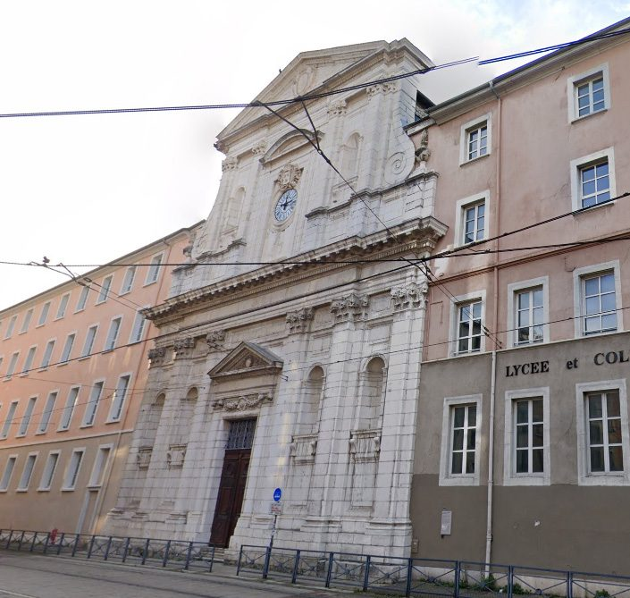
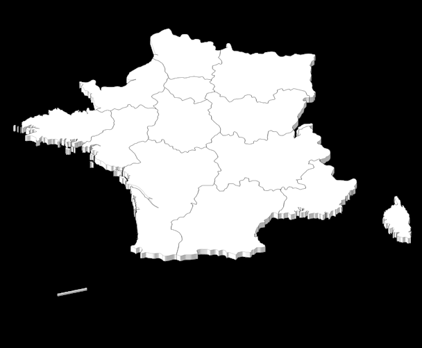
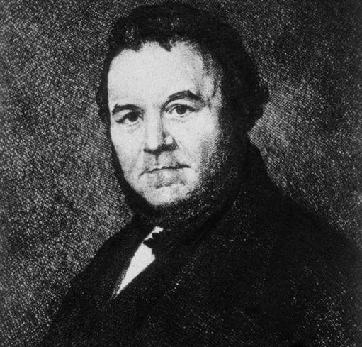
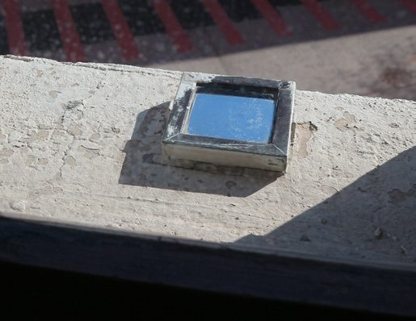
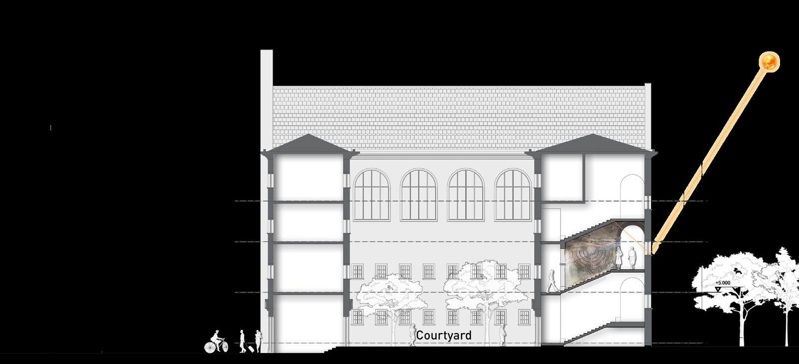
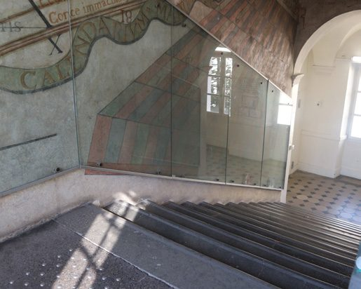

Jean Bonfa1638, Nîmes — 1724. SJ from 1654. Painted the dial 1672–74.
Grenoble45.1885° N · 5.7245° E
Seasons on the ceilingAESTAS · AUTUMNUS · HIBERNUM · VER
Chapter II · 1–2
Lycée Stendhal & Father Bonfa
The oldest school in Grenoble, a Jesuit mathematician, and a staircase turned into a lunisolar calendar.
The Cité Scolaire Stendhal stands on Place Jean Achard in central Grenoble — a large rectangular building with a symmetrical, classical facade, the oldest school in the city. Its site was the former Collège des Jésuites; among its pupils was Marie-Henri Beyle, who took the pen name Stendhal. The whole complex was finished only in 1703, built up in stages around the earlier buildings.


iJean Bonfa, professor of mathematics


Jean Bonfa was born on 30 May 1638 at Nîmes and joined the Society of Jesus on 31 January 1654. He taught mathematics — and later theology — at the Jesuit colleges of Grenoble (the early 1670s) and Avignon, and served as professeur royal of geometry and hydrography at the Marseille Arsenal (1680–1682), instructing naval pilots and officers. He corresponded with the Académie Royale des Sciences and became a corresponding member in 1699. Little of his work survives: a few dozen publications and letters, some lecture notes, a paradoxical 1696 map of the Comtat Venaissin — and the enormous sundial in Grenoble, which he painted between 1672 and 1674 with his students' help.
iiWhat the fresco does

To read time you track one spot of reflected sunlight from bottom to top of the wall — sunrise to noon — then back down to sunset. The mirror sits on the window sill; the fresco covers roughly 100 m². Inside it Bonfa combined:
- French time, counted from midnight — modern civil time;
- Babylonian time, from sunrise;
- Italian (“Roman”) time, from sunset;
- the twelve months and twelve zodiac signs, drawn as figures;
- the four seasons — AESTAS, AUTUMNUS, HIBERNUM, VER;
- times of sunrise and sunset, and a full lunisolar calendar that gives the Moon's age and position almost automatically — a real novelty in 1673.
On the landing, a ribboned cartouche on the left reads TEMPORI ET ÆTERNITATI — “this dial marks time for today, and eternity.”

iiiDimensions from the survey
Measured on 26 February 2022:
- Stair axis
- 1° 52′ east of north
- Flight width
- 2.05 m
- Wall thickness
- 0.33 m
- Landing: floor → ceiling
- 3.55 m
- Between mirror centres
- 1.63 m
- Ceiling above mirrors
- 2.60 m
- West mirror → west wall
- 1.42 m
- Mirror → west ceiling
- 3.37 m · east ceiling 3.10 m
- Rising / falling ceiling slope
- 3.80 m per 10 m (i ≈ 38 %)
- Latitude / longitude
- 45.1885° N · 5.7245° E
By the end of the 18th century the dial had lost its mirrors and the Horologium novum its style; the restorations of 1755, 1855, 1900 and 1918 left no record of which parts they touched. “This work still shows the author's aesthetic taste, ingenuity and science,” the thesis notes, “two and a half centuries after its creation.”